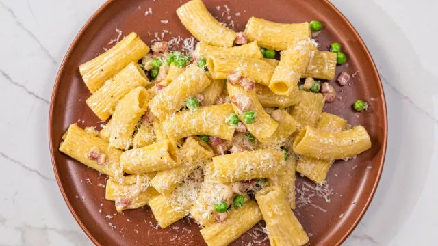

INGREDIENTES
- 300g de massa rigatoni
- 200g de pancetta
- 250g de ervilhas
- 1 cebola
- 250g de natas
- Azeite q.b.
- Sal q.b.
- Pimenta q.b.
- Queijo parmesão q.b.
MODO DE PREPARO
- Coloque ao lume um tacho com bastante água e sal. Assim que ferver junte a massa rigatoni e deixe cozinhar durante cerca de 6 minutos.
- Entretanto numa frigideira com um fio de azeite refogue muito bem a cebola picada. Junte a pancetta cortada em cubos e deixe cozinhar até ficar crocante. De seguida, junte as ervilhas e a massa cozida.
- Depois adicione as natas, tempere com sal e pimenta e deixe cozinhar até engrossar um pouco.
- Por fim, envolva tudo muito bem e se necessário junte um pouco da água de cozer a massa.
- Sirva polvilhado com queijo parmesão.